Functional programming is the oldest of the three major programming paradigms, none the less it is the last which gets wide spread usage. Even in languages like C++, Java or C# we want to use a functional style of programming.
Linq is the first Monad which got wide spread use in C#, and most C# programmers were not even aware of it beeing a monad, which probably helped.
Mark Seemann points out that "Unfortunately, Maybe implementations often come with an API that enables you to ask a Maybe object if it's populated or empty, and a way to extract the value from the Maybe container. This misleads many programmers [...]"
This library is based on his example code, and should grow slowly to a library which helps to use and understand the Functional programming paradigm. Functional programming is side-effect free and the strong type system can be used to make illegal state impossible.
Use functional programming as an additional asset to write correct code.
Simplify if null by using an Option
We start off with the following code: (Note that some types have been omitted for brevity)
#nullable enable
using System;
public class Example
{
public VersionEnvironment? GetCurrentVersionEnvironment(PackageName packageName)
{
var currentVersion = ReadCurrentVersion(packageName);
if (currentVersion is null)
{
return null;
}
var versionPath = GetVersionPath(packageName, currentVersion);
return new VersionEnvironment(currentVersion, versionPath);
}
public PackageVersion? ReadCurrentVersion(PackageName name) => null; // Real implementation omitted
public string GetVersionPath(PackageName name, PackageVersion version) => null!; // Real implementation omitted
}
The function GetCurrentVersionEnvironment doesn't do much, but it's not pleasant to look at,
because of that early return condition.
Step Ⅰ
We start off by changing the return type of ReadCurrentVersion from PackageVersion? to an Option:
public Option<PackageVersion> ReadCurrentVersion(PackageName name) => Option.None<PackageVersion>(); // Real implementation omitted
Step Ⅱ
This immediately breaks the GetCurrentVersionEnvironment, because our null check no longer makes sense.
Instead of checking for null and returning early, we can use Select on the Option to project its value.
public Option<VersionEnvironment> GetCurrentVersionEnvironment(PackageName packageName)
{
return ReadCurrentVersion(packageName)
.Select(currentVersion => {
var versionPath = GetVersionPath(packageName, currentVersion);
return new VersionEnvironment(currentVersion, versionPath);
});
}
Step Ⅲ
This is already much simpler, since we've got rid of that explicit null check.
There's still room for simplification, since our projection takes up two lines and we ideally only want a single expression in our projection.
We can achieve this by translating our expression to query syntax:
public Option<VersionEnvironment> GetCurrentVersionEnvironment(PackageName packageName)
{
return from currentVersion in ReadCurrentVersion(packageName)
let versionPath = GetVersionPath(packageName, currentVersion)
select new VersionEnvironment(currentVersion, versionPath);
}
Step Ⅳ
Since our method now consists of only one expression, we can make it an expression body:
public Option<VersionEnvironment> GetCurrentVersionEnvironment(PackageName packageName)
=> return from currentVersion in ReadCurrentVersion(packageName)
let versionPath = GetVersionPath(packageName, currentVersion)
select new VersionEnvironment(currentVersion, versionPath);
Option Monad
What is the Option Monad
The Option Monad is a very simple algebraic type which is a fancy way to say you can have more than one different type of data in it. The Option monad is a combination of a value of a type and a second type which can only be one value: None. The state of the option monad is always either None, or Some with a certain value of a type you can chose. It means it can hold any value of your chosen type + None state.
This is very similar to references which can be null or Nullable Value Types which adds the "has no value"-concept to value types.
However the main issue with references and Nullable<T> is, before every access you need to check if the value is accessible. The Option Monad is an abstraction which removes all this boilerplate code, in a save way.
Create something
var something = Option.Some(1337);
Create nothing
var nothing = Option<int>.None();
Select
Option<bool> maybeBool =
from m in maybe
select m == 1337;
Select Many
var result = from number in someNumber
from date in someDate
select Tuple.Create(number, date);
Match
bool isSome = maybe.Match(
none: false,
some: m => true
);
How can I get the value?
If you declare
int? integer = 1337;
You can access the Value directly via i.Value. The typical beginner question on the monad is therefore how to get to the value in a monad.
The Option-Monad intentionally has no way to get to the value directly because that would be an unsafe operation. The whole point of an optional is that it sometimes has no value. Instead you should inject the behaviour into the monad.
The basic Example:
int? integer = MaybeValue();
if (integer.HasValue())
{
Console.WriteLine($"Value: {integer.Value}");
}
Injecting the behaviour:
Option<int> integer = MaybeValue();
integer
.AndThen(i => Console.WriteLine($"Value: {i}"));
Or in Linq syntax:
from integer in MaybeValue()
select Console.WriteLine($"Value: {integer.Value}");
The TryVerb-pattern
The TryVerb pattern is used in several instances in C# as an alternative for functions which throw an exception.
Parse throws an exception if inputString is not a number.
var number = int.Parse(inputString);
TryParse returns false in such a case, so the number is always correct if TryParse returns true. This means you have to check the return value before accessing number.
if (int.TryParse(inputString, out number))
{
// ...
}
Out parameters are bad, and in consequence we think the TryVerb-pattern (TryGet, TryParse...) used in C# as an anti-pattern.
We have added an overload for each and every "Try" function we have found in the .NET Framework and we give an alternative in the Form
GetValueOrNone
Extension functions have been added to IDictionary and IReadOnlyDictionary
GetValuesOrNone
The parse functions
Option<int> = "1234".ParseIntOrNone();
The static class Funcky.Functional is designed to be used with a static import (using static Funcky.Functional;). All examples will be as if using static was used.
All the methods in Funcky.Functional are named to be easily understood without the functional prefix. They are general purpose, and their goal is to unify typical boilerplate code or be more expressive than typical C# ways of doing their job.
The NoOperation function is a more expressive way of manually creating an empty statement as a parameter to a method expecting a Action/Action<T>, supporting from 0 up to 8 generic parameters.
Example 1:
// The function we want to call:
public void DoSomething(int value, Action<int> callback)
{
// ...
}
// How we would usually call it when we don't need the callback:
DoSomething(2, _ => {});
// How you can call it with NoOperation:
DoSomething(2, NoOperation);
NoOperation becomes especially useful when a Action<T> with many parameters is expected.
Example 2:
// The function we want to call:
public void DoSomething(int value, Action<int, string, float, AnyCustomClassThatYouWant> callback)
{
// ...
}
// How we would usually call it when we don't need the callback (C#9):
DoSomething(2, (_, _, _, _) => {});
// Before C#9, this was even worse:
DoSomething(3, (_, __, ___, ____) => {});
// How you can call it with NoOperation:
DoSomething(2, NoOperation);
NoOperation is also useful when you want to use a expression body for a method.
Example 3:
// Abstract class:
public abstract class SomeClassWithExecuteAndHookBase
{
public void Execute();
protected abstract void PostExecutionHook();
}
// Derived class that doesn't have any use for the PostExecutionHook usually:
public class SomeClassWithExecuteAndHookDerived : SomeClassWithExecuteAndHookBase
{
protected override void PostExecutionHook()
{
}
}
// Derived class that doesn't have any use for the PostExecutionHook with NoOperation:
public class SomeClassWithExecuteAndHookDerived : SomeClassWithExecuteAndHookBase
{
protected override void PostExecutionHook() => NoOperation();
}
The Identity function is designed to replace parameter-returning lambdas, like sometimes used in LINQ.
Example 1:
// Method:
public void FunctionExpectingSelector<TIn, TOut>(Func<TIn, TOut> selector)
{
// ...
}
// Usually:
FunctionExpectingSelector(x => x);
// Or:
FunctionExpectingSelector(item => item);
// With Identity:
FunctionExpectingSelector(Identity);
Example 2 (typical SelectMany selector):
// Usually result of a query:
IEnumerable<IEnumerable<int>> itemGroups = new[] { new[] { 1, 2, 3 }, new[] { 5, 6, 7 } };
// Goal: Get all items flattened.
// Common approach:
itemGroups.SelectMany(x => x);
// Or:
itemGroups.SelectMany(items => items);
// With Identity:
itemGroups.SelectMany(Identity);
The unit type is an alternative to the native C# struct Void (with the global alias void).
The C# compiler handles Void/void very different to all other types in C#:
Voidcan never be used. You must always usevoidvoidcan not be instantiatedvoidcan not be used as a generic argument to any function- A function (sometimes also called method) "returning"
voiddoes not return a value, and the result of the function (void) can not be assigned to any variable - When using reflection, void-methods will return
nullbecause the compiler can not know during compile-time what the dynamically dispatched method will return
These limitations on the void type introduce annoying behaviour, especially with expressions and generics.
Example 1 - the "void is not a real type" dilemma:
This examples uses a simple algebraic datatype with a generic match method:
public abstract class SimpleAlgebraicDatatype
{
private SimpleAlgebraicDatatype()
{
}
public abstract TResult Match<TResult>(
Func<Variant1, TResult> variant1,
Func<Variant2, TResult> variant2);
public class Variant1 : SimpleAlgebraicDatatype
{
public Variant1(string someValue)
{
SomeValue = someValue;
}
public string SomeValue { get; }
public override TResult Match<TResult>(
Func<Variant1, TResult> variant1,
Func<Variant2, TResult> variant2)
=> variant1(this);
}
public class Variant2 : SimpleAlgebraicDatatype
{
public Variant2(int someValue)
{
SomeValue = someValue;
}
public int SomeValue { get; }
public override TResult Match<TResult>(
Func<Variant1, TResult> variant1,
Func<Variant2, TResult> variant2)
=> variant2(this);
}
}
It then can be used like that:
SimpleAlgebraicDatatype variant = new SimpleAlgebraicDatatype.Variant1("Hey");
// get the variant as string
var value = variant.Match(
variant1: variant1 => variant1.SomeValue,
variant2: variant2 => Convert.ToString(variant2.SomeValue));
Console.WriteLine(value);
But if you don't want to use the return value, you're stuck with returning a value you don't want. This does not compile:
// Error [CS0411] The type arguments for method 'method' cannot be inferred from the usage. Try specifying the type arguments explicitly.
variant.Match(
variant1: variant1 => Console.Write(variant1.SomeValue),
variant2: variant2 => Console.Write(Convert.ToString(variant2.SomeValue)));
Now you have to decide what it returns. One option is to return null - the best fitting return type is probably object? in that case:
variant.Match<object?>(
variant1: variant1 =>
{
Console.Write(variant1.SomeValue);
return null;
},
variant2: variant2 =>
{
Console.Write(Convert.ToString(variant2.SomeValue));
return null;
});
This is very unstatisfying however. We have to trick the type-system. There should be a more expressive way.
Funcky.Unit to the rescue:
variant.Match(
variant1: variant1 =>
{
Console.Write(variant1.SomeValue);
return Unit.Value;
},
variant2: variant2 =>
{
Console.Write(Convert.ToString(variant2.SomeValue));
return Unit.Value;
});
Now this isn't really less noise. This is why we created ActionToUnit.
This clears up the code to:
variant.Match(
variant1: variant1 => ActionToUnit(() => Console.Write(variant1.SomeValue)),
variant2: variant2 => ActionToUnit(() => Console.Write(Convert.ToString(variant2.SomeValue))));
See ActionToUnit for an explanation.
Example 2 - the "switch expression must return something" dilemma:
The following two code snippes do not comple:
// Error [CS0201]: Only assignment, call, increment, decrement, and new object expressions can be used as a statement.
variant switch
{
SimpleAlgebraicDatatype.Variant1 variant1 => Console.Write(variant1.SomeValue),
SimpleAlgebraicDatatype.Variant2 variant2 => Console.Write(Convert.ToString(variant2.SomeValue)),
_ => throw new Exception("Unreachable"),
};
// Error [CS0029]: Cannot implicitly convert type 'thorw-expression' to 'void'
// Error [CS9209]: A value of type 'void' may not be assigned.
_ = variant switch
{
SimpleAlgebraicDatatype.Variant1 variant1 => Console.Write(variant1.SomeValue),
SimpleAlgebraicDatatype.Variant2 variant2 => Console.Write(Convert.ToString(variant2.SomeValue)),
_ => throw new Exception("Unreachable"),
};
One way to resolve this dilemma is to return a method that returns null from every arm, and execute it after:
// very verbose and not very readable
Func<SimpleAlgebraicDatatype, object> action = variant switch
{
SimpleAlgebraicDatatype.Variant1 variant1 => _ =>
{
Console.Write(Convert.ToString(variant1.SomeValue));
return null;
},
SimpleAlgebraicDatatype.Variant2 variant2 => _ =>
{
Console.Write(Convert.ToString(variant2.SomeValue));
return null;
},
_ => _ => throw new Exception("Unreachable"),
};
action(variant);
If we use ActionToUnit once again, we can simplify this code, by a lot:
_ = variant switch
{
SimpleAlgebraicDatatype.Variant1 variant1 => ActionToUnit(() => Console.Write(variant1.SomeValue)),
SimpleAlgebraicDatatype.Variant2 variant2 => ActionToUnit(() => Console.Write(Convert.ToString(variant2.SomeValue))),
};
If you cannot use the discard syntax (_ =), simply use var _ or similar, and ignore the variable after.
The ActionToUnit function wraps a action into a function that returns a Funcky.Unit instance.
You could write this method for yourself like this:
public static Func<Unit> ActionToUnit(Action action) => (Func<Unit>) (() =>
{
action();
return new Unit(); // or default, or Funcky.Unit.Value
});
However, if you now wanted a wrapper for a method with a parameter going into the action, you would need to write this:
public static Func<T, Unit> ActionToUnit<T>(Action<T> action) => (Func<T, Unit>) (parameter =>
{
action(parameter);
return new Unit();
});
Now with 2 parameters, you would need 2 generic parameters, and so on.
We already support everything from 0 up to 8 in the static class Functional,
so you can just write using static Funcky.Functional in your using section, and start using ActionToUnit.
For some use cases, see the Unit Type documentation.
Here one example with a switch expression:
var value = GetValue();
_ = value switch
{
"Known" => ActionToUnit(() => Console.Write("Known")),
_ => ActionToUnit(() => Console.Write("Unknown")),
};
Extensions-methods on IEnumerable
LINQ offers you many important higher order functions to transform IEnumerables in many ways.
Funcky offers a few additional ones which can come in handy.
AdjacentGroupBy
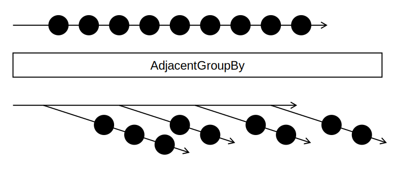
AverageOrNone
CartesianProduct
In mathematics, specifically set theory, the Cartesian product of two sets A and B, denoted A×B, is the set of all ordered pairs (a, b) where a is in A and b is in B.
The CartesianProduct extension function returns all possible pairs of two given IEnumerables.
There are two overloads, one which lets you choose
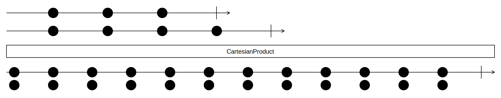
Examples
Two sequences as input:
smiles = [😀, 😐, 🙄]
fruits = [🍉, 🍌, 🍇, 🍓]
The cartesian products of smiles and fruits:
smiles × fruits => [[😀, 🍉], [😀, 🍌], [😀, 🍇], [😀, 🍓],
[😐, 🍉], [😐, 🍌], [😐, 🍇], [😐, 🍓],
[🙄, 🍉], [🙄, 🍌], [🙄, 🍇], [🙄, 🍓]]
In this C# example you see how all Playing cards are in fact a cartesian product of a suit and a value.
This example uses the overload with our own selector, because we just want a sequence of strings.
var suits = ImmutableList.Create("♠", "♣", "♥", "♦");
var values =
ImmutableList.Create("2", "3", "4", "5", "6", "7", "8", "9", "T", "J", "Q", "K", "A");
var allCards = suits.CartesianProduct(values, (suit, value) => $"{value}{suit}");
Chunk
With the .Chunk(int) extension method, you can turn an IEnumerable<T> into a IEnumerable<IEnumerable<T>>, with the inner Enumerables being of the given size.
Empty and negative chunk sizes are not allowed and will throw a ArgumentOutOfRangeException.
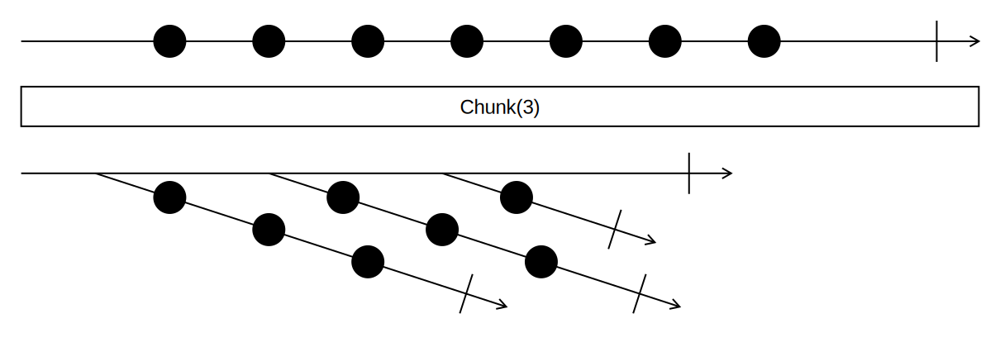
Examples
var numbers = new List<int> { 1, 2, 3, 4, 5, 6, 7, 8, 9 };
var chunked = numbers.Chunk(3);
// Result: IEnumerable with Chunks of size 3:
// 1st Chunk: 1, 2, 3
// 2nd Chunk: 4, 5, 6
// 3rd Chunk: 7, 8, 9
When the last chunk isn't complete, we get a smaller, incomplete last chunk:
var numbers = new List<int> { 1, 2, 3, 4, 5, 6, 7 };
var chunked = numbers.Chunk(4);
// Result: IEnumerable with Chunks of size 4:
// 1st Chunk: 1, 2, 3, 4
// 2nd Chunk: 5, 6, 7
If required, you can also pass a result selector, that turns the inner IEnumerables into a different type:
var magicSquare = new List<int> { 4, 9, 2, 3, 5, 7, 8, 1, 6 };
var result = magicSquare.Chunk(3, Enumerable.Average); // equivalent to magicSquare.Chunk(3, number => Enumerable.Average(number));
// Result: IEnumerable<int> with 5, 5, 5 as items
ForEach
With the .ForEach extension method, you can invoke an action for each item in an enumerable, just like a foreach statement would allow you to do.
This method is already available in .NET, but just on Lists, and it makes sense for it to be available on every enumerable.
Keep in mind that .ForEach is imperative and only expects an Action<T>. It should not be used to change state of anything outside of the .ForEach.
If you want to combine the enumerable into a result, consider using .Aggregate(), as that is designed for such use-cases.
Example
// Original
foreach (var item in Items)
{
DoSomething(item);
}
// Using `.ForEach`
Items.ForEach(DoSomething); // equivalent to Items.ForEach(item => DoSomething(item));
FirstOrNone
Inspect
With the .Inspect extension method, you can invoke an action for each item in an enumerable,
just like .ForEach or the foreach statement would allow you to do, but the method yields the initial enumerable back.
This can be useful when you want to apply a side-effect to a list before returning, or continue selecting on a list after applying a side-effect.
Inspect can be especially useful when you want to log step(s) of a complex query, since you don't have to change the structure of the code to use it.
Examples
// Original using .ForEach
var items = someList.Select(TransformSomething);
Items.ForEach(DoSomething);
return items;
// Using `.Inspect`
return someList.Select(TransformSomething).Inspect(DoSomething);
// Original using foreach
var items = someList.Select(TransformToSomething);
foreach (var item in items)
{
DoSomething(item);
}
var transformedItems = items.Select(TransformToSomethingElse);
// Using `.Inspect`
var transformedItems = someList
.Select(TransformSomething)
.Inspect(DoSomething)
.Select(TransformToSomethingElse);
Deferred Execution
It is important to understand at which moment .Inspect is executed. The exact moment of execution is the same as if it were a Select, Where or any other deferred LINQ-method.
See Microsoft Docs for more information about deferred execution in LINQ.
This is also an important difference between .ForEach (eager) and .Inspect (deferred).
Consider the following example:
Enumerable.Range(1, 100)
.Inspect(n => Console.WriteLine($"before where: {n}"))
.Where(n => n % 2 == 0)
.Inspect(n => Console.WriteLine($"after where: {n}"))
.Inspect(Console.WriteLine)
.Take(2)
.ToImmutableList(); // <- Side effects of .Inspect happen here
// Prints:
// before where: 1
// before where: 2
// after where: 2
// 2
// before where: 3
// before where: 4
// after where: 4
// 4
Interleave
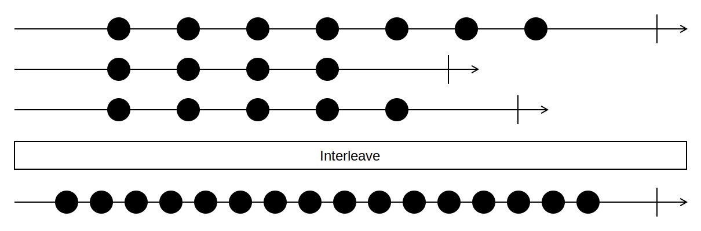
Intersperse
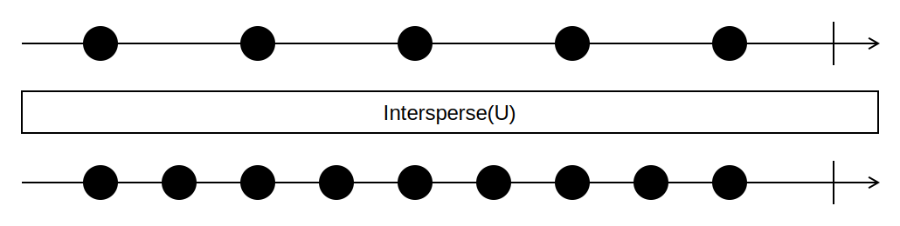
Materialize
Merge
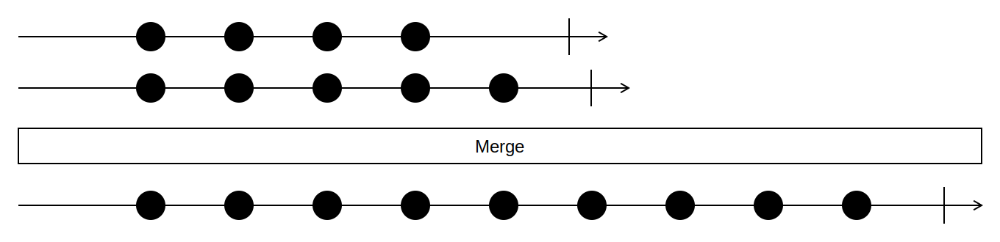
Examples
Given two sequences which are already ordered the same way:
sequence1 = [1, 2, 7, 9, 14]
sequence2 = [3, 6, 8, 11, 12, 16]
By merging we get one single sequence with the all elements of the given sequences with the same order.
sequence1.Merge(sequence2) =>
[1, 2, 7, 9, 14 ]
[ 3, 6, 8, 11, 12, 16]
-------------------------------------
[1, 2, 3, 6, 7, 8, 9, 11, 12, 14, 16]
None
With the .None extension method, you can make !enumerable.Any() calls easier.
That's all there is. You can replace:
if (!enumerable.Any()) { ... }
with the easier to read
if (enumerable.None()) { ... }
Just like with .Any(), you can additionally pass a predicate as a parameter:
if (enumerable.None(item => item.SomeNumericProperty == 2) { ... }
PairWise
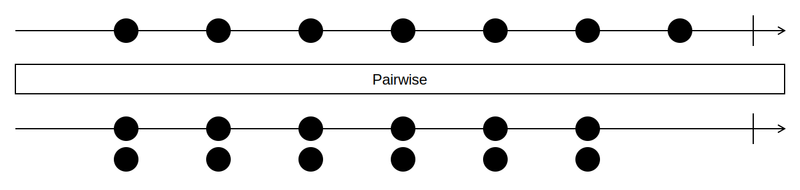
Example
animals = [ 🐵, 🐶, 🐺, 🐱, 🦄, 🐷, 🦁]
animals.PairWise() =>
[[🐵, 🐶],
[🐶, 🐺],
[🐺, 🐱],
[🐱, 🦄],
[🦄, 🐷],
[🐷, 🦁]]
Partition
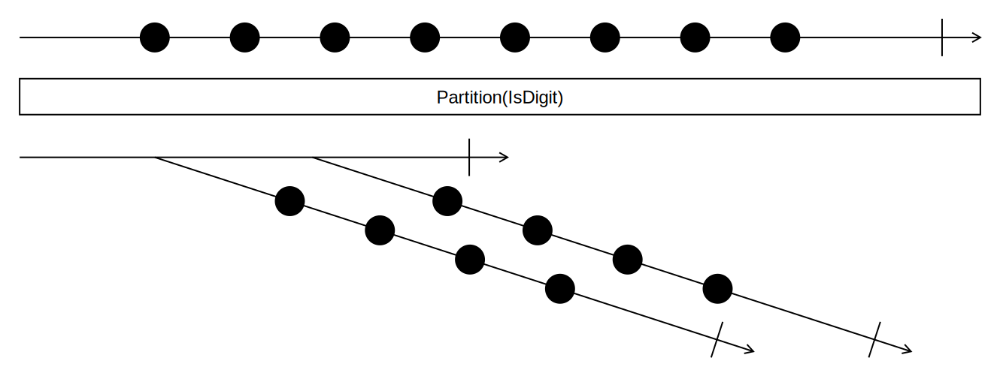
Example
plantBasedFood = [🍉, 🍩 , 🎂, 🍌, 🍫, 🍓, 🍒, 🥕, 🌽, 🥧 ]
plantBasedFood.Partition(IsProcessedFood?)
=> [[🍩 , 🎂, 🍫, 🥧],
[🍉, 🍌, 🍓, 🍒, 🥕, 🌽]]
PowerSet
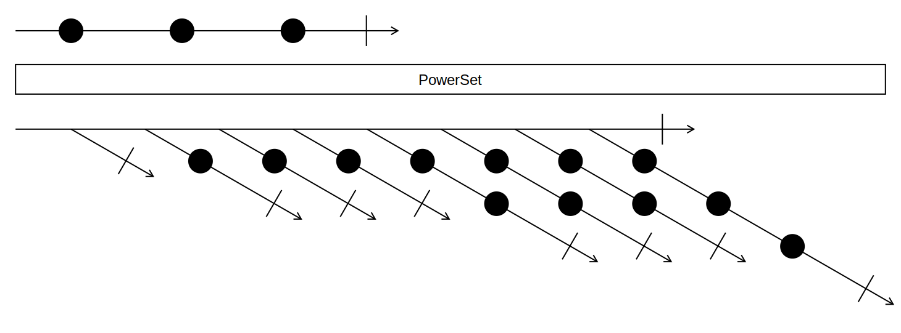
Shuffle
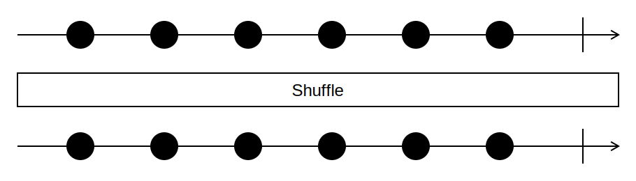
SlidingWindow
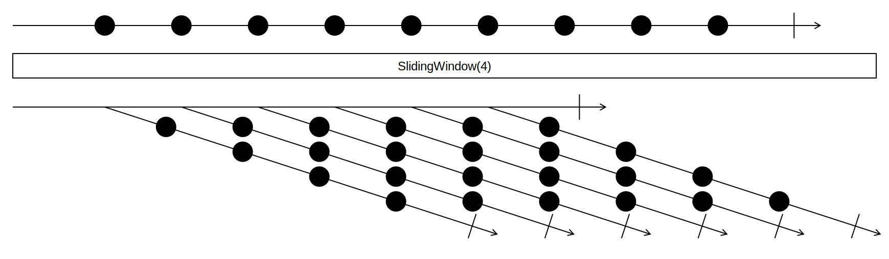
Split
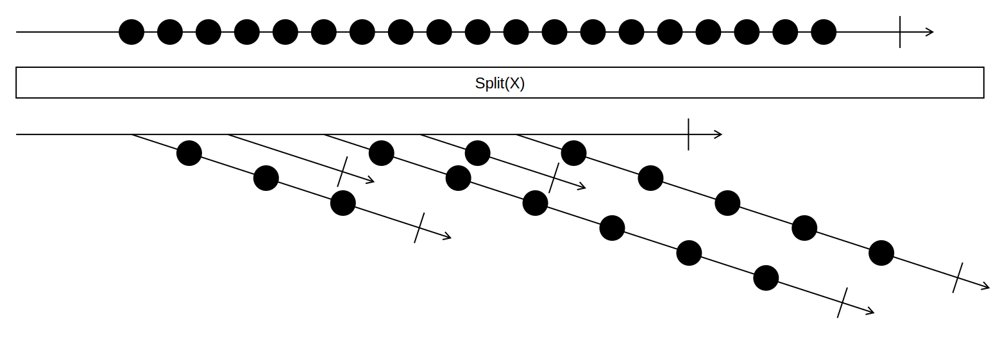
TakeEvery
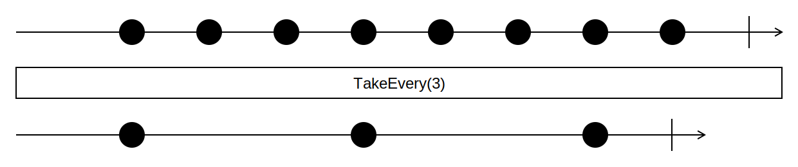
Transpose
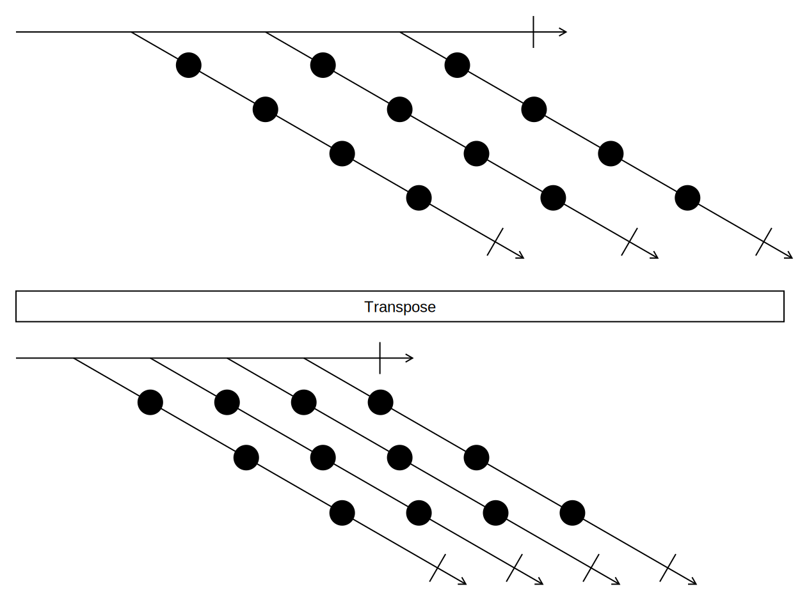
WhereNotNull
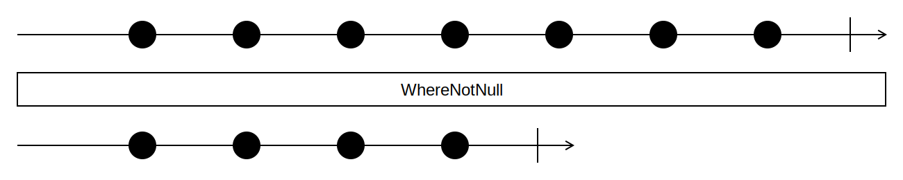
WhereSelect
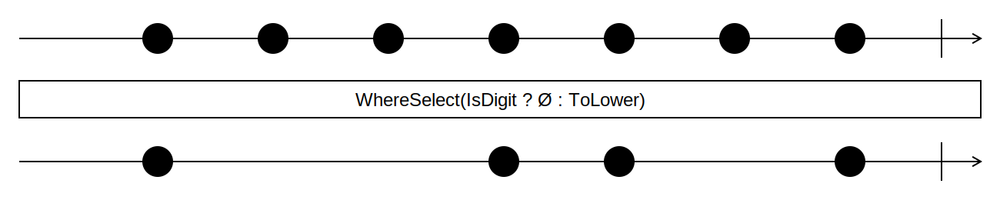
WithFirst
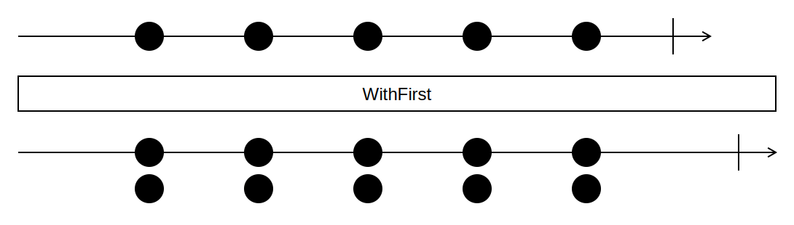
WithIndex
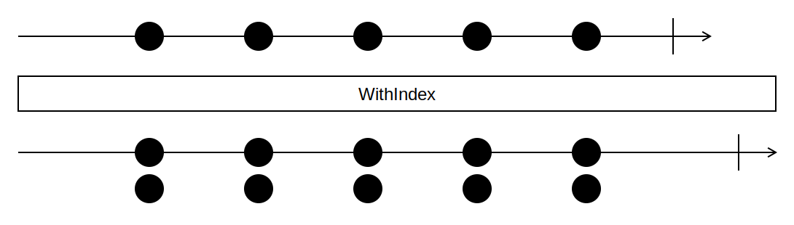
WithLast
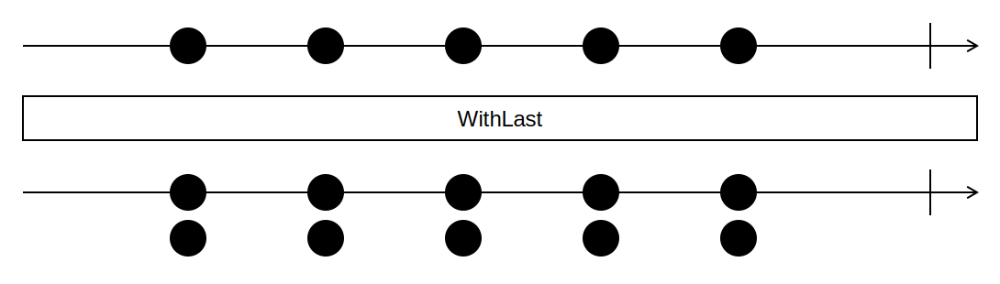
WithPrevious
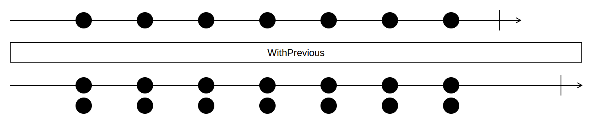
Example
animals = [ 🦄, 🐺, 🐷, 🦁, 🐵, 🐶 ]
animals.WithPrevious() =>
[[∅, 🦄],
[🦄, 🐺],
[🐺, 🐷],
[🐷, 🦁],
[🦁, 🐵],
[🐵, 🐶]]
ZipLongest

String Extensions
IndexOf
The classical IndexOf methods provide a special form of error handling by returning -1 when nothing is found.
This is very cumbersome and a potential footgun, since you're not forced to check the return value.
Funcky offers extension methods on string for each overload of IndexOf, IndexOfAny, LastIndexOf, and LastIndexOfAny.
The extension methods follow the simple convention of being suffixed with OrNone.
Option<string> ParseKey(string input)
=> input.IndexOfOrNone('[')
.Select(startIndex => ParseKeyWithMultipleParts(input, startIndex))
.GetOrElse(() => ParseRegularKey(input));
Example usage of IndexOfOrNone
Changelog
All notable changes to this project will be documented in this file. Funcky adheres to Semantic Versioning.
Unreleased
- Add
ParseVersionOrNoneextension. - Implement
InspectforEitherandResult. - Use Source Generator to emit more
*OrNonefunctions. - Cartesian Product deprecated.
- Add implicit converions for
EitherandResult.
Funcky.Xunit
- Breaking: Funcky.Xunit now uses the
Funckynamespace, instead ofFuncky.Xunit.
Funcky 2.6.0 | Funcky.Analyzers 1.0.0
Analyzers
This release comes with a new package Funcky.Analyzers, which we'll use
to guide users of Funcky
New extensions
- Add extensions
DequeueOrNoneandPeekOrNoneonQueueandConcurrentQueue. - Add extension
ConcatToStringas an alias forstring.Concat. - Add overload to
WhereSelectwith no parameter. - Add methods to convert from
EithertoOption: #439LeftOrNone: Returns the left value orNoneif the either value was right.RightOrNone: Returns the right value orNoneif the either value was left.
- Extension functions for
System.Rangeto allow the generations ofIEnumerable<T>s from Range-Syntax:foreach(var i in 1..5) { } // negative numbers are not supported from x in 5..2 from y in 1..3 select (x, y)
Improvements to Sequence
Sequence.Returnnow accepts multiple parameters:Sequence.Return(1, 2, 3)- ⚠️
Sequence.Generatehas been deprecated in favour of the newly addedSequence.Successorsfunction which includes the first element (seed) in the generated sequence.
Improvements to Option
- Add
Option.FromBooleanto create anOption<T>from a boolean.
Improvements to Result
The behaviour of the Result.Error constructor has been changed regarding exceptions
with an already set stack trace. The original stack trace is now preserved.
Previously this resulted in the stacktrace being replaced (.NET < 5.0) or an error (.NET ≥ 5.0).
Improvements to Either
- Add
Either.Flipto swaps left with right.
Tooling
- Funcky automatically adds global usings for the most important namespaces of funcky
when the
FunckyImplicitUsingsproperty is set. This requires .NET SDK ≥ 6.0 and C# ≥ 10.0. - Funcky now supports trimming for self-contained deployments.
Option<T>now works with the new System.Text.Json source generation.- The
Funckypackage now supports Source Link and deterministic builds. - The symbols package is now finally working again.
Funcky 2.5.0
Reader Monad
This release includes the Reader monad including a bunch of factory methods
and convenience extensions.
public static Reader<Enviroment, IEnumerable<string>> DefaultLayout(IEnumerable<DateTime> month)
=> from colorizedMonthName in ColorizedMonthName(month)
from weekDayLine in WeekDayLine()
from weeksInMonth in month
.GroupBy(GetWeekOfYear)
.Select(FormatWeek)
.Sequence()
select BuildDefaultLayout(colorizedMonthName, weekDayLine, weeksInMonth);
Improved Action Extensions
Funcky now supports Curry, Uncurry and Flip for Actions too.
This release also adds the inversion of ActionToUnit: UnitToAction
More Extensions for IEnumerable<T>
Intersperse: Adds a given item in between all items of an enumerable.JoinToString: Alias forstring.Join.WithPrevious: Similar toWithFirst/Last/Indexbut with the predecessor of each item.ForEach: Add an overload toForEachthat accepts aUnit-returningFunc.
Additional Factory Methods
EitherOrBoth.FromOptionscreates anEitherOrBothfrom two options.Lazy.FromFunccreates aLazy<T>from aFunc.
This is sugar over theLazy<T>constructor, with the additional benefit of supporting type inference.Lazy.Returncreates aLazy<T>from a value.
This is sugar over theLazy<T>constructor, with the additional benefit of supporting type inference.
Documentation Improvements
This release comes with a few small documentation improvements.
Funcky users will now also see the [Pure] attributes which were previously not emitted.
Funcky 2.4.1
- Remove upper bounds on all Microsoft.Bcl.* dependencies. Between the 2.3.0 and 2.4.0 release an overly restrictive upper bound was accidentally introduced for Microsoft.Bcl.AsyncInterfaces.
Funcky 2.4.0
Try* → *OrNone
We've renamed all Try* methods, such as TryParse, TryGet value to *OrNone.
The old methods are still available, but marked as obsolete and will be removed in 3.0.0.
Factory methods for IEnumerable<T>
This release adds some new factory methods for creating IEnumerable<T>
to the Sequence class:
Sequence.RepeatRange: Generates a sequence that contains the same sequence of elements the given number of timesSequence.Cycle: Cycles the same element over and over again as an endless generator.Sequence.CycleRange: Generates a sequence that contains the same sequence of elements over and over again as an endless generatorSequence.Concat
More Extension Methods
for IEnumerable<T>
Materialize: Materializes all the items of a lazy enumerable.PowerSet: Returns a sequence with the set of all subsetsShuffle: Returns the given sequence in random Order in O(n).Split: Splits the source sequence a separator.ZipLongest: Zips two sequences with different lengths.
for string
SplitLazy: Splits a string by separator lazily.SplitLines: Splits a string by newline lazily.
for Func
CurryUncurryFlipCompose
EitherOrBoth
EitherOrBoth is a new data type that can represent Left, Right and Both. It is used in ZipLongest.
Monad.Return
This release adds a Return method for all monad types in Funcky:
Option.ReturnEither<TLeft>.ReturnResult.Return
OptionEqualityComparer
To support more advanced comparison scenarios, OptionEqualityComparer has been added similar to the already existing OptionComparer.
Smaller Improvements
- Added a missing
Matchoverload toEitherthat takesActions - Added additional overloads for
Functional.TrueandFunctional.Falsefor up to four parameters.
Funcky 2.3.0
net5.0has been added to Funcky's target frameworks.
Improvements to Option<T>
Option<T>is now implicitly convertible fromT.public static Option<int> Answer => 42;Optionadds support forSystem.Text.Json:
The customJsonConverteris picked up automatically when serializing/deserializing.Noneis serialized asnullandSome(value)is serialized to whatevervalueserializes to.
Factory methods for IEnumerable<T>
This release adds factory methods for creating IEnumerable<T>
with the static class Sequence:
Sequence.Return: Creates anIEnumerable<T>with exactly one item.Sequence.FromNullable: Creates anIEnumerable<T>with zero or one items.Sequence.Generate: Creates anIEnumerable<T>using a generation function and a seed.
More Extension Methods for IEnumerable<T>
This release adds a bunch of new extension methods on IEnumerable<T>:
AdjacentGroupByAverageOrNoneCartesianProductChunkElementAtOrNoneInterleaveMaxOrNoneMergeMinOrNonePairwisePartitionSlidingWindowTakeEveryTransposeWithFirstWithIndexWithLast
IAsyncEnumerable<T> Support
This release adds a couple of extension methods that provide interoperability
with Option<T> to IAsyncEnumerable<T>:
WhereSelectFirstOrNoneAsyncLastOrNoneAsyncSingleOrNoneAsyncElementAtOrNoneAsync
A couple of the new extension methods on IEnumerable<T> have async counterparts:
PairwiseTakeEvery
The naming of the extension methods and their overloads follows that of System.Linq.Async.
Improved IQueryable Support
This release adds specialized extension methods for IQueryable<T> that are better
suited especially for use with EF Core:
FirstOrNoneLastOrNoneSingleOrNone
Dependencies
To support .NET Standard, Funcky conditionally pulls in dependencies that provide the missing functionality:
Microsoft.Bcl.AsyncInterfacesfor .NET Standard 2.0System.Collections.ImmutableandSystem.Text.Jsonfor .NET Standard 2.0 and 2.1- The version constraints for all these packages have been relaxed to allow 5.x.
Improvements
ConfigureAwait(false)is now used everywhereawaitis used.- The
IRetryPolicyimplementations now use correctTimespanwithdoublemultiplication when targeting .NET Standard 2.0.
Deprecations
ObjectExtensions.ToEnumerablehas been deprecated in favor ofSequence.FromNullable.RequireClassandRequireStructhave been obsoleted with no replacement.
Funcky 2.2.0 | Funcky.xUnit 0.1.3
- Added overload to
Functional.Retrywith aIRetryPolicy. - Added
Noneoverload that takes no predicate.
Funcky 2.1.1 | Funcky.xUnit 0.1.2
- Re-release of previous release with correct assemblies.
Funcky 2.1.0 | Funcky.xUnit 0.1.1
- Add
Inspectmethod toOptionakin toIEnumerable.Inspect. - Add
ToTheoryDataextension forIEnumerable<T>for xUnit. - Add
Unit.Valueas a way to a get aUnitvalue. - Add
Functional.Retrywhich retries a producer untilOption.Someis returned.
Funcky 2.0.0
Breaking Changes
- Remove
Readermonad based onawait. - Remove
IToString. - Remove overload for
Option.Fromthat flattens passedOptions. - Move
ToEnumerableextension method to its own class. This is only a breaking change if you've used the extension method as normal method. In that case you need to changeEnumerableExtensions.ToEnumerabletoObjectExtensions.ToEnumerable. - Rename
Option.FromtoOption.FromNullableand remove overload that takes non-nullable value types. - Unify
Option<T>.ToEnumerableandYieldtoToEnumerable - Rename
OrElseoverloads that return the item toGetOrElsewhich improves overload resolution. - The
Eachextension method onIEnumerable<T>has been renamed toForEach. - Move the
Okconstructor ofResult<T>to a non-generic class. This allows for the compiler to infer the generic type. Old:Result<int>.Ok(10). New:Result.Ok(10). - Use
Func<T, bool>instead ofPredicate<T>in predicate composition functions (Functional.All,Functional.Any,Functional.Not), because most APIs inSystemuseFunc. Functional.Anynow returnsfalsewhen the given list of predicates is empty.
Fixes
- Fix incorrect
Equalsimplementation onOption.Equalspreviously returnedtruewhen comparing aNonevalue with aSomevalue containing the default value of the type. Exceptioncreated byResultmonad contains valid stack trace- Fix incorrect implementation on
Result.SelectManywhich called theselectedResultSelectoreven when the result was an error. As a result (pun intended) of the fix,ResultCombinationExceptionis no longer needed and also removed.
Additions
- Add
IndexOfOrNone,LastIndexOfOrNone,IndexOfAnyOrNoneandLastIndexOfAnyOrNoneextension methods tostring. - Added
Curry,UncurryandFlipto theFunctionalClass - Add extension method for
HttpHeaders.TryGetValues, which returns anOption. - Add extension methods for getting
Streamproperties that are not always available, asOption:GetLengthOrNone,GetPositionOrNone,GetReadTimeoutOrNone,GetWriteTimeoutOrNone. - Add
Noneextension method toIEnumerable. Option<Task<T>>,Option<Task>and theirValueTaskequivalents are now awaitable:var answer = await Option.Some(Task.FromResult(42));
Improvements
- Full nullable support introduced with C# 8.
- Mark our functions as
[Pure]. - Implement
IEquatableonOption,ResultandEither.
Funcky 2.0.0-rc.2
- Move the
Okconstructor ofResult<T>to a non-generic class. This allows for the compiler to infer the generic type. Old:Result<int>.Ok(10). New:Result.Ok(10). - Add
IndexOfOrNone,LastIndexOfOrNone,IndexOfAnyOrNoneandLastIndexOfAnyOrNoneextension methods tostring. - Rename
OrElseoverloads that return the item toGetOrElsewhich improves overload resolution. - Added
Curry,UncurryandFlipto theFunctionalClass - Remove
IToString. - Mark our functions as
[Pure]. - Fix incorrect implementation on
Result.SelectManywhich called theselectedResultSelectoreven when the result was an error. As a result (pun intended) of the fix,ResultCombinationExceptionis no longer needed and also removed.
Funcky 2.0.0-rc.1
- Full nullable support introduced with C# 8
- Rename
Option.From->Option.FromNullableand remove overload that takes non-nullable value types. - Use
Func<T, bool>instead ofPredicate<T>in predicate composition functions (Functional.All,Functional.Any,Functional.Not), because most APIs inSystemuseFunc. Functional.Anynow returnsfalsewhen the given list of predicates is empty.- The
Eachextension method onIEnumerable<T>has been renamed toForEach. - Unify
Option<T>.ToEnumerableandYieldtoToEnumerable - Remove
Readermonad based onawait. Exceptioncreated byResultmonad contains valid stack trace
Funcky 1.8.0
- Added overload for
AndThenwhich flattens theOption - Add
Wheremethod toOption<T>, which allows filtering theOptionby a predicate. - Add overload for
Option<T>.SelectManythat takes only a selector. - Add
WhereNotNullextension method forIEnumerable<T>.
Funcky 1.7.0
- Add nullability annotations to everything except for
Monads.Reader. - Add a function for creating an
Option<T>from a nullable value:Option.From. Either.Matchnow throws when called on anEithervalue created usingdefault(Either<L, R>).- Add
TrueandFalsefunctions to public API - Match of
ResultMonad accepts actions - Add
FirstOrNone,LastOrNoneandSingleOrNoneextension functions
Funcky 1.6.0
- Add ToEnumerable function to
Option<T>. - Add
WhereSelectextension function forIEnumerable<T>. - Add missing overload for nullary actions to
ActionToUnit.